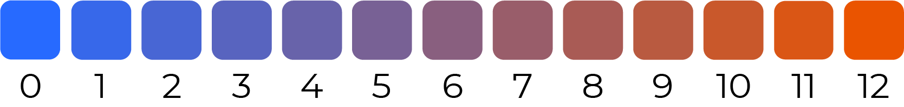

This is a visualization of how many times the refrigerator door was opened and how many items entered or exited the refrigerator. The data was collected for 7 days period and visualized to learn more about the inefficiency caused by my habit of checking inside the refrigerator.
number of times the fridge was open
